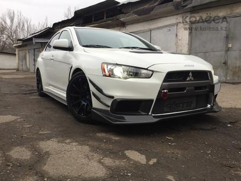

Lancer Evolution |
|
|---|---|
| More Images | The Mitsubishi Lancer Evolution, also known as the Lancer Evo or just Evo, was a sports sedan manufactured by Mitsubishi Motors that is based on the normal Lancer. There have been ten official versions to date, and the designation of each model is most commonly a Roman numeral. All use two litre turbocharged inline four-cylinder engines and all-wheel drive systems. The Evolution was originally intended only for Japanese markets, but demand on the "grey import" market led the Evolution series to be offered through Ralliart dealer networks in the United Kingdom and in various European markets from around 1998. Mitsubishi decided to export the eighth generation Evolution to the United States in 2003 after witnessing the success Subaru had in that market with their long-time direct rival, the Subaru Impreza WRX STi. |
Subaru Impreza |
|
|---|---|
| More Images | The Subaru Impreza (スバル・インプレッサ) is a compact family car that has been manufactured since 1992 by Subaru, introduced as a replacement for the Leone, with the predecessor's EA series engines replaced by the new EJ series. Debuting at the Tokyo Auto Show in October 2007, WRX STI versions build further on the standard WRX cars. The STI available in Japan is fitted with the 2.0-liter EJ207 engine with twin scroll turbocharger generating 227 kW (308 PS) at 6400 RPM and 422 N·m (311 lb·ft) of torque at 4400 RPM. Export markets receive the higher-displacement 2.5-liter EJ257 unit with the single-scroll VF48 turbocharger rated at 221 kW (300 PS) and 407 N·m (300 lb·ft) of torque. The turbocharger directs air through a larger top-mount intercooler which has lost the red "STI" that was on previous generations. The STI (3,395 lbs) is heavier than the WRX (3,174- 3,240 lbs depending on trim) due to a more robust transmission, rear differential and other chassis reinforcements. |